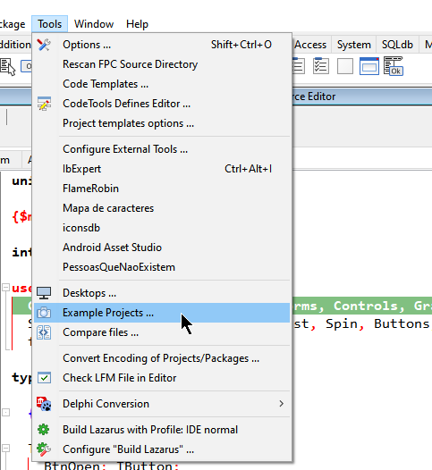
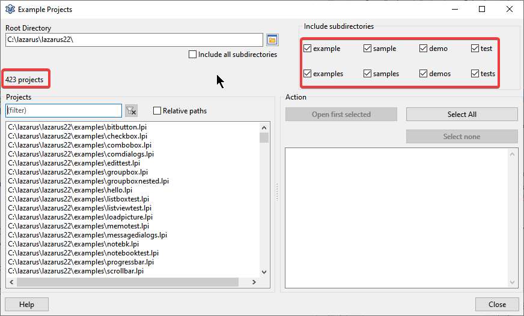

Uma dificuldade muito grande para quem ainda não tem experiência é encontrar exemplos de como usar componentes e classes no FreePascal e Lazarus.
De modo geral, todos os componentes e classes que acompanham o Lazarus acompanham também demos, exemplos, amostras e até mesmo códigos para testes que se situam na pasta de cada um deles. Contudo, alguns esquecem de olhar ou nem sabem que existem, por isso, criei este artigo que acompanha um vídeo.
Provavelmente o time do Lazarus também constatou essa dificuldade e criou uma solução bastante prática e moderna. Vá em Tools|Example Projects :

E então encontrará mais de 400 exemplos para os mais variados fins, não acredita, então veja:

Assista o vídeo abaixo, será mais fácil demonstrar como usar esta pratica ferramenta a fim de encontrar aprendizado e solução:
Use este recurso sempre que tiver duvidas sobre o funcionamento de um componente ou classe.